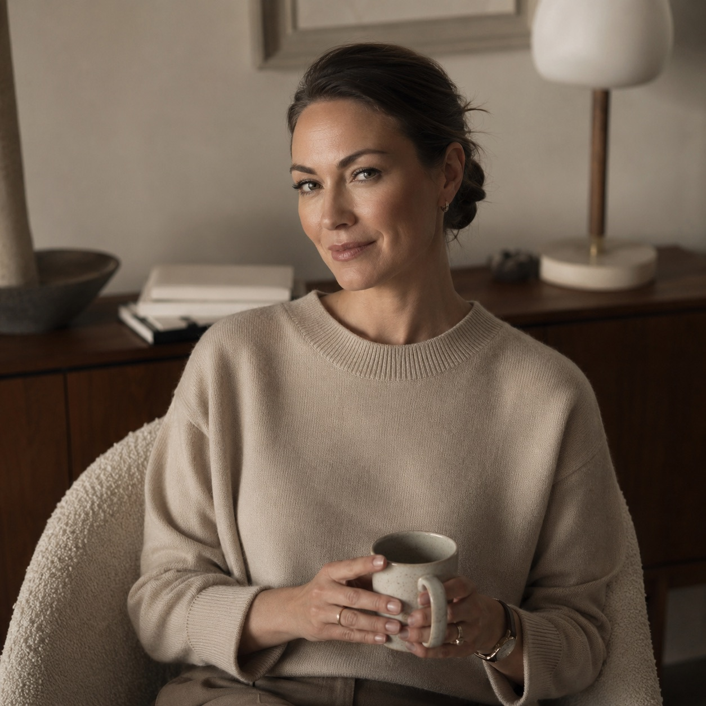

«Синдром отличника»
БольВзрослые дети, которые всю жизнь были «удобными». Боятся ошибок, критики, живут в вечном напряжении.
ЗапросПерфекционизм, прокрастинация, потеря смысла, страх публичных выступлений.
Клинический психолог, когнитивно-поведенческий терапевт, специалист по работе с психосоматикой и тревожными расстройствами.
Действительный член Общероссийской профессиональной психотерапевтической лиги (ОППЛ). Сертифицированный супервизор — 4 года наставничества.

Когда вы читаете этот текст, ваш мозг, скорее всего, ищет причину не доверять мне. Это нормально. Я бы тоже искала, будь я на вашем месте.
Я не буду писать, что я «лучший специалист» или что у меня «100% результат». Потому что психология — это не магия, это тяжёлый, честный труд. Я — проводник, а не волшебник. Но я обещаю вам три вещи:
- Я не буду врать вам, чтобы вы чувствовали себя лучше здесь и сейчас.
- Я не буду использовать ваш страх, чтобы заработать больше денег.
- Я не оставлю вас одного с вашей болью, даже когда вы решите, что терапия закончена — я даю поддержку в кризисные моменты.
Я знаю, как страшно идти к психологу. Особенно если вы привыкли всё контролировать. Особенно если вы мужчина, и вас учили «не ныть». Особенно если вы мать, которая считает, что должна справляться сама. Я сломала этот стереотип в себе, я помогу сломать его и вам.
Александра Вольская
Я работаю с теми, кто устал терпеть. Мои клиенты — это не просто «пациенты», это мои учителя.
Взрослые дети, которые всю жизнь были «удобными». Боятся ошибок, критики, живут в вечном напряжении.
ЗапросПерфекционизм, прокрастинация, потеря смысла, страх публичных выступлений.
Эмпаты, которые растворяются в других, не умеют говорить «нет». Часто — жёны алкоголиков, дочери нарциссических матерей.
ЗапросЭмоциональное выгорание, панические атаки, депрессивные эпизоды, психосоматика.
Мужчины 35–55 лет, которые заработали деньги, построили бизнес, но потеряли радость, сон и уверенность из-за стресса.
ЗапросТревога, бессонница, низкая самооценка в профессиональной среде, проблемы в браке.
Люди в экзистенциальном кризисе — развод, увольнение, переезд. Чувство, что жизнь прошла мимо.
ЗапросАпатия, деперсонализация, обесценивание собственной жизни.
Я не «просто слушаю». За 60 минут мы не тратим время на пустые разговоры — у меня есть чёткая структура, которая даёт быстрые результаты.
Мы выявляем автоматические мысли, которые прокручиваются в голове за долю секунды и портят настроение.
Учимся оспаривать иррациональные убеждения — «я должна всем нравиться», «я не справлюсь».
Внедряем поведенческие эксперименты: вы делаете то, что боитесь, но в безопасной обстановке.
Сертификация по работе с мышечными зажимами. Тревога живёт не в голове, а в диафрагме, челюсти, плечах.
Дыхательные техники и упражнения на заземление снимают острый приступ паники за 5–7 минут.
Если проблемы тянутся из детства, мы не просто говорим «мама была плохая». Мы находим ваши «схемы» — убеждения, сформированные в возрасте до 10 лет — и мягко переписываем их через ролевые игры и визуализации.
Для клиентов с ПТСР. Использую движение глаз, чтобы «переупаковать» болезненные воспоминания и снизить их эмоциональный заряд.
Пять лет вела приём в кризисном отделении городской психиатрической больницы №1 — работала с суицидальными состояниями и острыми психозами. С 2020 года выступаю супервизором для молодых психологов: это значит, что я не только знаю теорию, но и умею передавать знания.
Считаю неэтичным вести клиентов, если сам не хожу к психотерапевту. Это как парикмахер с лысиной или фитнес-тренер с пивным животом.
Я прохожу личную терапию с 2010 года. Более 600 часов своей жизни я потратила на то, чтобы разобраться в своих тараканах. Сейчас я хожу на супервизию раз в месяц к профессору из Швейцарии — работаем онлайн. Это стоит мне больших денег, но я делаю это ради вас: чтобы мои собственные проекции и неврозы никогда не касались вашей психики.
— Александра Вольская, о личной терапии
Имена не раскрываю, но публикую факты с разрешения клиентов.
Егор, 38 лет, IT-директор.
ЗапросПанические атаки каждое утро перед совещаниями — дрожь в голосе, потливость, страх увольнения, хотя прибыль его отдела выросла на 40% за год.
РаботаСтрах увольнения оказался метафорой страха разочаровать отца, который всю жизнь говорил, что «из него ничего не выйдет». Мы прорабатывали схему «Неудачник» через ролевые игры: я играла роль его отца, и Егор впервые в жизни сказал ему «нет».
РезультатЧерез 3 месяца панические атаки прошли. Егор перестал работать 24/7, начал делегировать задачи и получил повышение.
Ирина, 29 лет, в декрете.
ЗапросПостоянное раздражение, слёзы, ощущение, что она «плохая мать», не может заставить себя улыбаться детям, считает себя эгоисткой.
РаботаМы работали не с материнством, а с ресурсом — Ирина забыла, что она женщина, а не только «мама». Использовали телесные практики и договорились о «часе эгоизма» в день. Я дала разрешение ей злиться.
РезультатЧерез 2 месяца она вышла на удалённую работу — 30 часов в неделю. Отношения с мужем наладились, дети перестали её бояться.
Саша — это первая женщина-психолог, которая не пыталась меня обнять и пожалеть. Она давала чёткие, жёсткие, но такие точные вопросы! Я пришла с комом в горле от обиды на мужа, а через месяц поняла, что обида — это просто моя слабость. Она научила меня защищать себя, не повышая голоса.
Я обращался к трём психологам до неё. Все говорили «вам нужно принять себя». Не работало — я ненавидел свои слабости. Александра первая сказала: «Миша, твоя злость — это твой двигатель, давай направим её в спорт». Я начал бегать марафоны. Мой бизнес вырос.
Я боялась темноты и не могла пройти 300 метров от дома одна. Александра делала со мной упражнения на заземление — растирание ладоней, дыхание, ощущение ног. Через 2 месяца я переехала в отдельную квартиру и хожу в офис одна.
Стыд — это социальный конструкт. В моём кабинете нет морали. Я слышала истории про измены, криминальные фантазии, зависть к собственным детям. Ничто из этого не вызывает у меня эмоций, кроме одного — желания помочь вам перестать носить этот груз. Я не судья, я врач скорой помощи.
Я не люблю «бесконечную» терапию — это невыгодно клиенту. Мы заключаем контракт на 12 сессий: за это время закрываем 70% симптомов. Если проблема сложная и требует глубинной работы, мы продлеваем, но всегда поэтапно. Каждые 4 сессии делаем замеры вашего состояния.
Эффективность онлайна, по исследованиям APA, не уступает очной терапии, если терапевт обучен работать через экран. Я вижу вашу мимику, слышу дыхание, мы можем делать телесные упражнения прямо перед камерой. Для многих онлайн даже лучше — вы находитесь в своей безопасной среде, и не нужно тратить время на дорогу.
Да, я работаю в тандеме с психиатрами, и это приветствуется. Иногда химия нужна, чтобы «поднять» нейромедиаторы до уровня, где психотерапия вообще начинает работать. Я не отменяю таблетки — я работаю с мыслями, пока химия работает с телом.
Я не обещаю, что станет легко. Я обещаю, что станет честно. А честность — это единственный путь к свободе.
Диагностическая встреча — 50 минут, 5 000 ₽.
Вы рассказываете свою историю, я задаю вопросы. В конце я говорю: вот
что я вижу, вот сколько примерно времени это займёт, вот сколько это
будет стоить. Без обязательств.